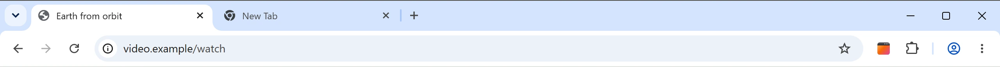
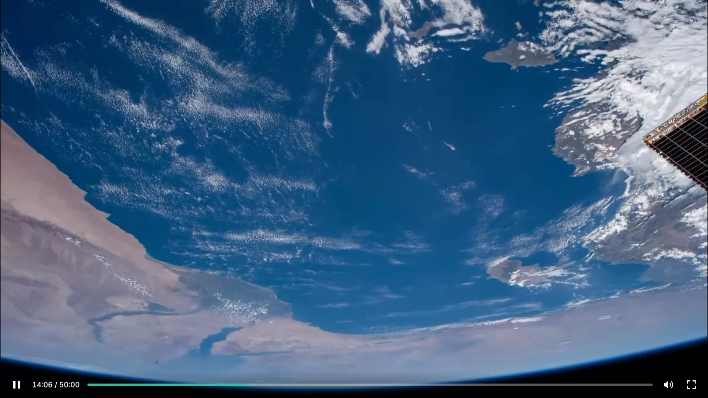
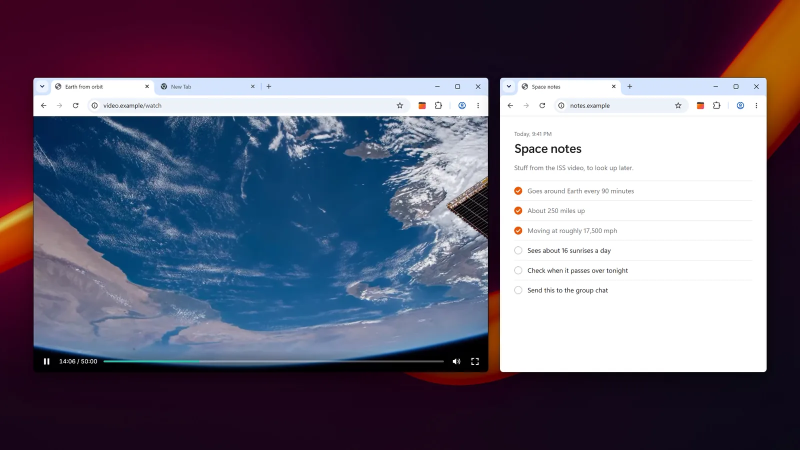
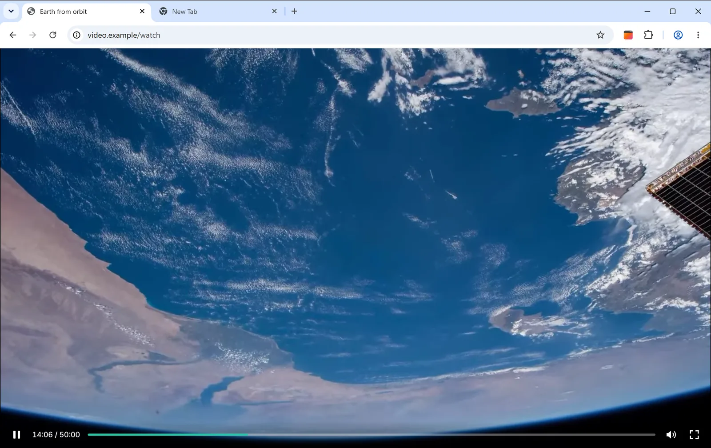
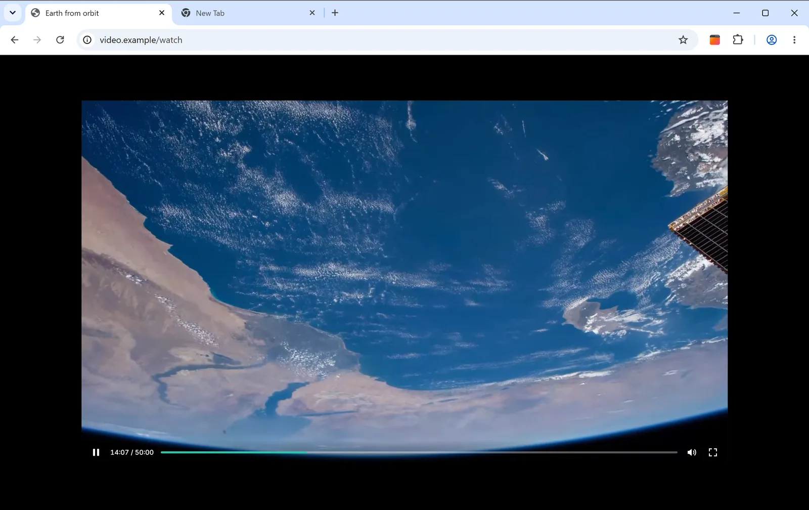
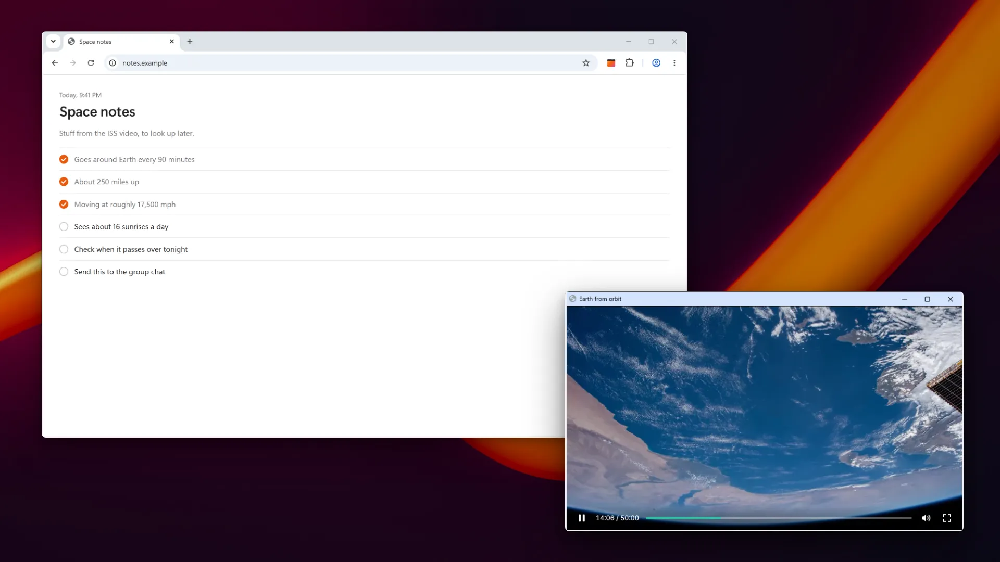
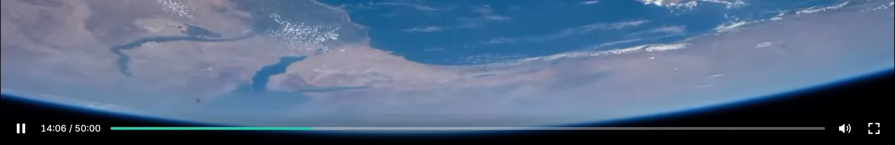
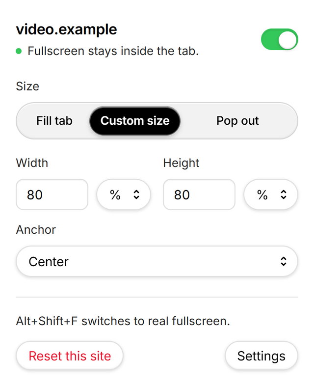

Full Window, Not ScreenVideo Sizer
Hit fullscreen on a video and it fills the browser tab instead of your whole screen.
For Chrome and Microsoft Edge · Collects nothing

It fills the tab, not the screen.
Normally, fullscreen takes over your whole monitor. With Full Window on, the video fills the browser tab and everything else stays put. You can still check another window, keep an eye on chat, or get some work done.


Pick the size.
Set it once for every site, or give a site its own size. It’s all in the toolbar button.



Good to know.
The player still works.
The site thinks it’s in fullscreen, so its own controls keep working: play, pause, seek, volume, captions and quality. Picture-in-picture only gives you the browser’s basic controls.


Every site, or just this one.
Click the toolbar icon to change it for every site, or just the one you’re on.
Esc
Press Esc to get out.
AltShiftF
Need real fullscreen?
Alt+Shift+F switches between the tab and your whole screen. You can change the key in your browser’s shortcut settings.
Privacy
It doesn’t collect anything.
No tracking, no account, and it never connects to the internet. Your settings stay in your browser. If you use browser sync, they sync like your other settings.
When you install it, the browser warns that it can “read and change all your data on all websites.” That sounds scary, so here’s why: it has to catch the fullscreen button on any site, including videos embedded from other sites. It doesn’t read or send anything.
Questions
How do I get normal fullscreen back?
Press Alt+Shift+F. It switches between fullscreen in the tab and your whole screen. You can also turn it off for a site from the toolbar icon.
Can I turn it off for one site?
Yes. Go to the site, click the toolbar icon, and flip the switch.
Does it work on Netflix?
We haven’t tested it yet, since it needs an account. If it doesn’t work, let us know.
Is there a Firefox or Safari version?
Not right now. It’s only for Chrome and Microsoft Edge.
A site doesn’t work. Now what?
Email inquiries@avorforge.com with the link and we’ll take a look.